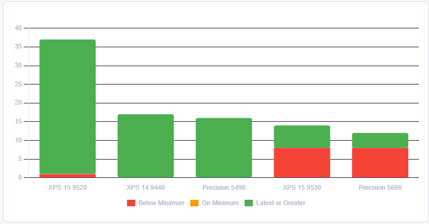
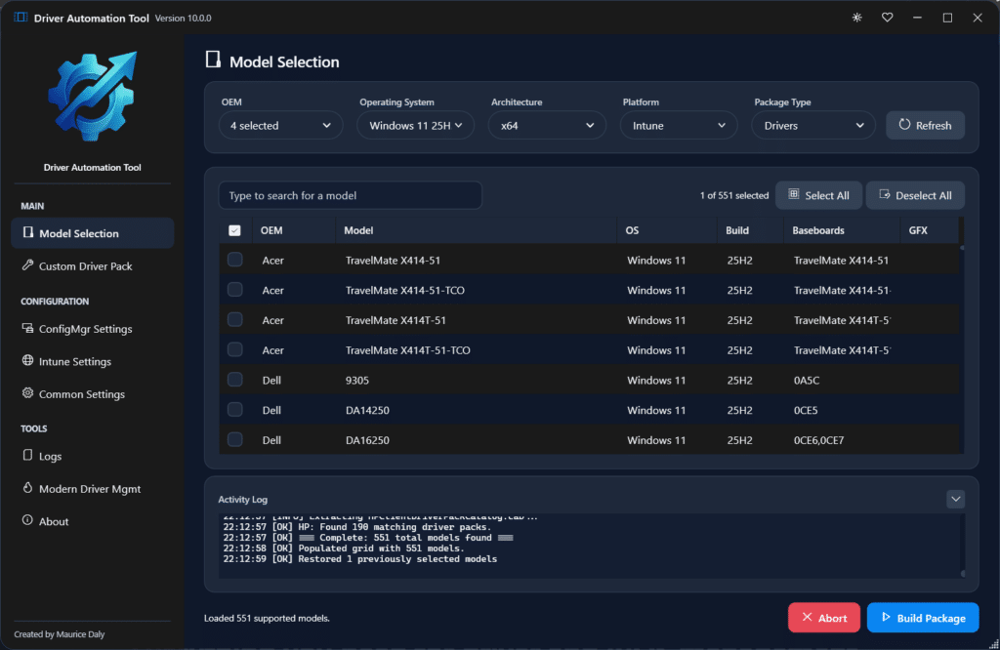
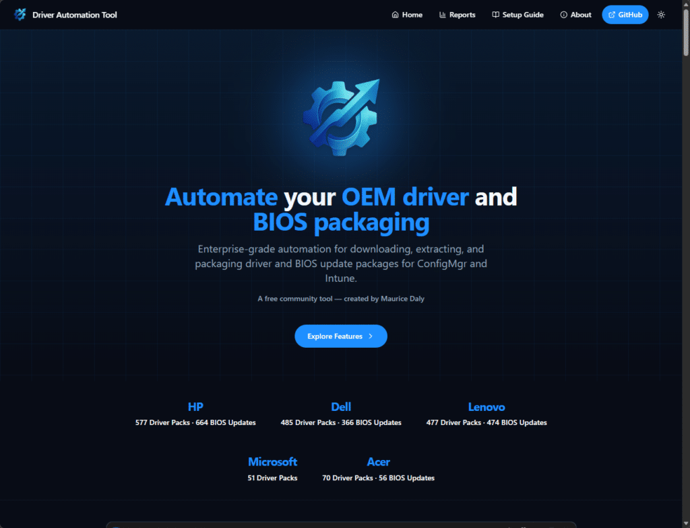
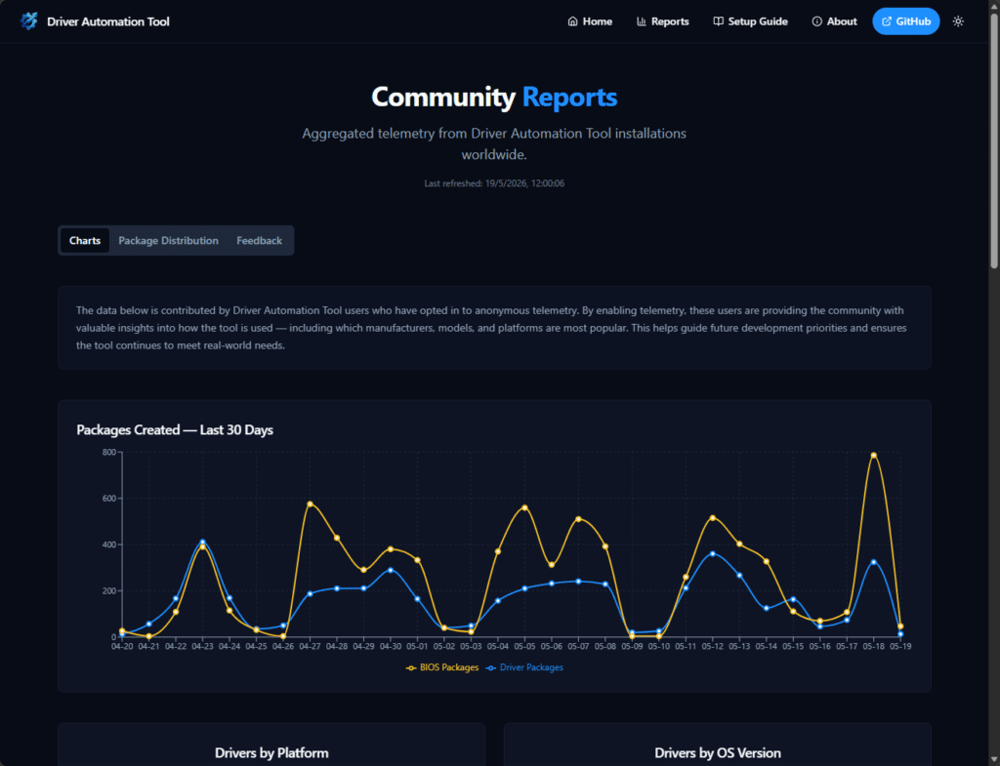
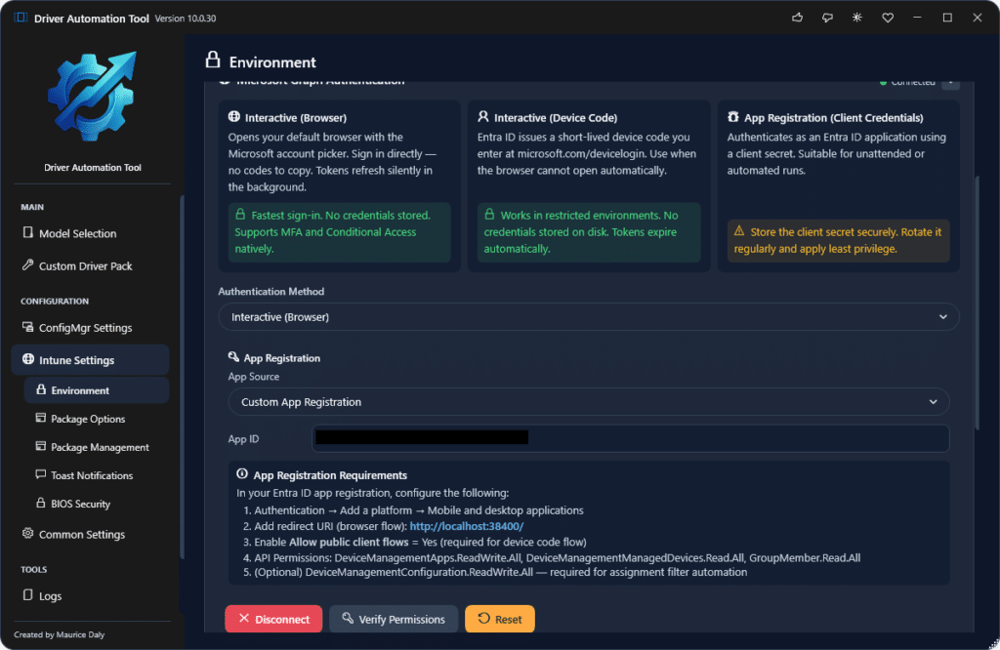
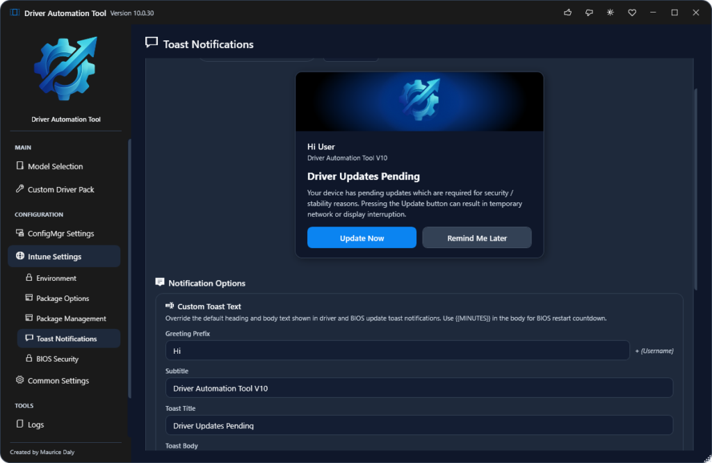
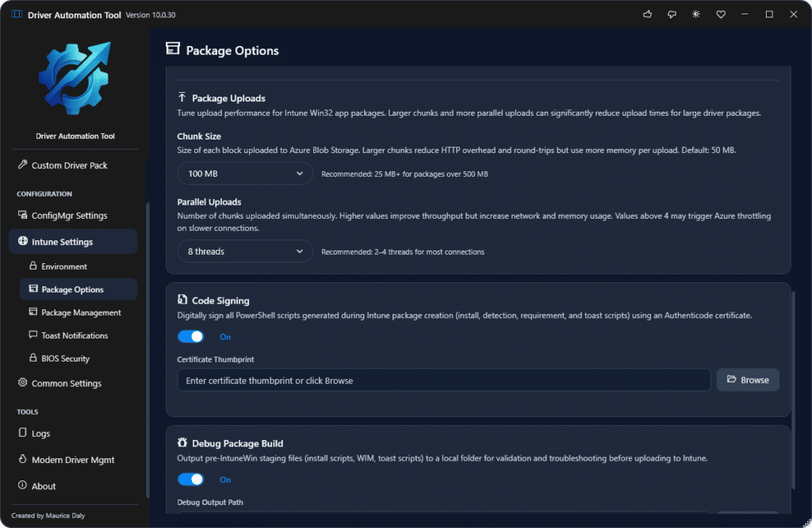
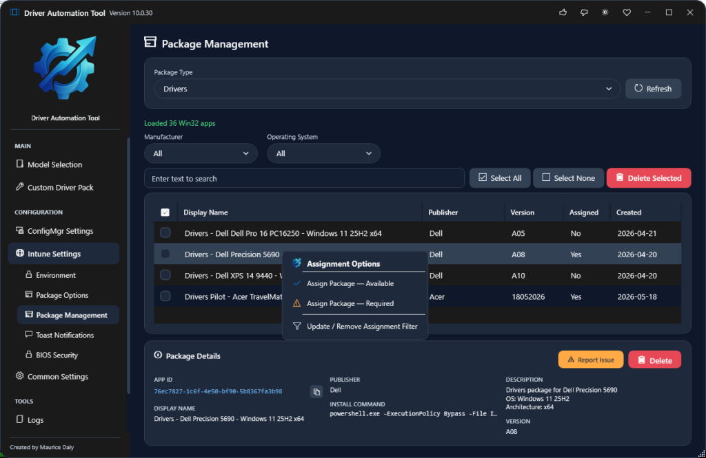
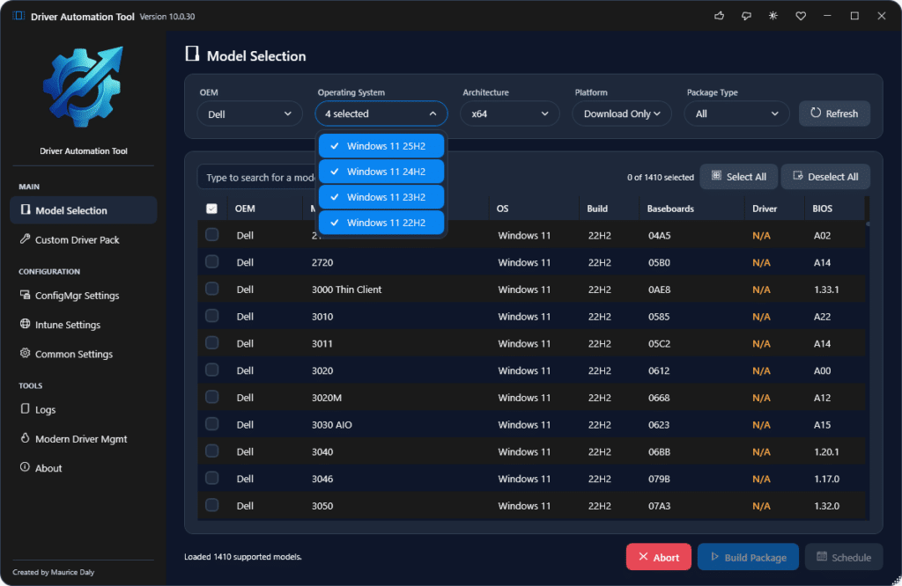

With its roots back in 2016, the Driver Automation Tool has been one of those projects that started off as an internal tool, and quickly became something that people relied on to serve the need to populate Driver and BIOS updates in Configuration Manager.
The tool was, of course, one part of a solution Nickolaj Andersen and I called “Modern Driver Management”, later expanded to include “Modern BIOS Management”, and it quickly gained popularity within the community, as it filled a gap in Configuration Manager’s own driver package handling.
The Driver Automation Tool has evolved since then, and just under four weeks ago, a long-overdue update was released, marking its 10th iteration in the 10 years of development. This post is both an update from me about its development and the issues associated with it over the years, along with excitement at the new features of the new release and where they can help admins, including Intune admins..
Community Tools – A Labour of Love
As with all community tools, the thing is they are a passion project where individuals typically start off by solving a need for themselves. This is the case with the Driver Automation Tool, which I initially created just as a PowerShell script to download and inject the binaries into Configuration Manager. This for me was a time saver and therefore at the time I thought if it helped me, it could help others, so a rough GUI was bolted on, and it was yeet’ed to the community.
During the initial few years I worked with OEM’s to get or even help them setup their own XML feeds, and for the most part things were stable. Of course there are times when some OEM’s throw a curveball and it knocks the tool out of sync, causing it at worst case to not display the models you need from that OEM, but I have always tried to stay on top of it.
Over time, though, life changes, and through changes in my personal family commitments and career moves, the time to spend on this project became extremely limited. Unfortunately, the optics on this aren’t always clear, so, of course, people would complain that the project was no longer being maintained, or, in the worst cases, they would demand calls with me or even slate my efforts on social media. This got to me because sometimes things in life need to take priority, and my time was simply not available due to real priorities in life.
The fact is, I have never abandoned the project. Now, fast forward to a few months ago, and one of the requests I had from my employer was that I could have time to set aside to work on an update. Then, the secure boot issue entered the room.
Secure Boot – The Kick I Needed
Having gone full circle and now being in an internal-facing role, one of my responsibilities was themanagement of our Intune environment. With devices being patched through Microsoft Autopatch, things were usually looking good until the need to look into the firmware deeper came with the requirement to ensure BIOS firmware was updated on all devices.
This led me to discover that some models in particular were better at keeping up to date, and in some cases, models that had the latest firmware on some machines did not on others.
{kind=link}

I’m not knocking Autopatch at all, by the way, but I did realise that for admins like myself, they might need another option to ensure their devices were kept up to date.
This caused me to essentially reboot the Driver Automation Tool, to serve my own needs again. In this case, the world had moved on, and Configuration Manager was not the deployment method, so I did something I wanted to do for a long time, and that was to add Intune support properly.
A New Friend – Claude
AI is all around us today, and if you are not dabbling in leveraging it for even simple processes, then you should, as it is better to always stay at the curve when working in IT. Leveraging Claude to look at the code base for the V7 and V8 builds of the Driver Automation Tool, I had a number of objectives, including;
- Intune Support
- Toast Notifications + Control
- A Better, Faster UI, moving away from WinForms and Sapien requirements
- More intuative features
- Reporting
With this in mind, I set about migrating the code to a WPF + XAML UI, and within a few weeks of coding, the initial V10 release was ready to ship.
{kind=link}

The real benefit of working with AI on this was reduced time to work on the code, allowing me to add the things I always wanted to do, much quicker.
At the same time, I thought the tool deserved its own standalone website and branding, not because of any issues with the MSEndpointMgr team or brand, it’s just something I have worked on for so many years, and I wanted the site to include API’s and reporting, so https://www.driverautomationtool.com was born.


New Tool, New Features
Today, the tool is now in its 30th build, and while that might sound like a lot of a tool out in less than 4 weeks, what it actually means is I am listening to GitHub issues, and I am adding new functional requests quickly to help those use the tool in the best way possible.
New community driven additions include
- Custom App authentication
{kind=link}

- Fully customisable toast notifications
{kind=link}

- Code signing of certificates (bring your own cert)
{kind=link}

- Package assignment directly in the UI
{kind=link}

- Multi OS selection to show all possible downloads
{kind=link}

The list will continue to grow and I have more ideas…
Some key stats in the past 4 weeks include;
- 396 unique installations (correction 397 as I was typing)
- 4838 driver packages created
- 7727 bios packages created
- 1227 unique models selected
If you are still on the old V7 release, or have not revisited the updated version, I urge you to do so as it contains so many improvements over the old release, and something I am now once again proud to be driving as a solution for the community.
Download from GitHub here – maurice-daly/DriverAutomationTool: Home of the Driver Automation Tool
Community Support
During the development of the new V10 build, it is only right that I thank two people who, in particular, have done a lot of testing. They are Paul Andrews (Paul Andrews | LinkedIn) and Thomas Førde (Thomas Førde | LinkedIn), who worked long hours to undertake end-user testing, highlight bugs, and steer the direction of the development. Thanks to both of you!
Another word of thanks goes to the good folks at Patch My PC, who have always supported my efforts over the years by including the tool in the catalogue, although it might be removed now (due to the retirement of the MSI).
This is where the true spirit of community tools comes from, and I am looking forward to ensuring that the tool is maintained and maybe even goes a step further in the future.